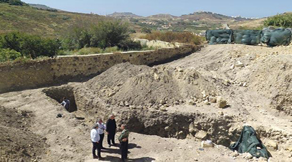

Notícias Nacionais de Malta
terça-feira, 11 de maio de 2017, 19 : 58
Antigas muralhas descobertas fora de Cittadella
Restos de antigas muralhas que datam da era dos cartagineses foram descobertos fora de Ċittadella, Gozo, no local de um parque de estacionamento em construção.
As duas paredes foram experimentalmente datadas da era dos cartagineses (200 AC), no entanto, eles continuaram a ser utilizados no período romano até à Antigüidade tardia.
A descoberta foi feita em trincheiras de teste durante o monitoramento controlado pela Superintendência de Patrimônio Cultural, como parte de uma segunda fase de escavações arqueológicas.
No mês passado, os moradores da região relataram que vestígios arqueológicos antigos foram limpos durante as obras para pavimentar uma rampa de Triq Sant'Ursola em Victoria, Gozo.
Os trabalhos são necessários para formar uma rampa de acesso temporário, que permite o transporte do sedimento inspecionado resultante das investigações arqueológicas que estão relacionadas com um outro projeto para construir um parque de estacionamento de três andares.
O estacionamento proposto no ano passado desencadeou protestos públicos, já que seria necessário a demolição de uma moradia, conforme relatado pelo engenheiro civil Ġużè Damato em Triq Il-Kastell . O pedido foi passado para um oficial de caso.
Quando contatado, o superintendente do Patrimônio Cultural Anthony Pace observou que a superintendência ainda não havia encontrado depósitos arqueológicos intactos e seguros.
Ontem, esta reportagem foi informada que durante a primeira fase do exercício de monitoramento, uma grande quantidade de solo despejado tinha sido examinada.
O material parece ter se originado de uma obra dos anos 50, quando a Castle Hill Street foi construída.
Os resíduos de construção parecem ter sido despejados nos campos que agora se encontram logo atrás das casas que se alinham a rua.
A segunda fase de escavações avançou para uma profundidade de pouco mais de dois metros, e foi quando as duas antigas muralhas foram desenterradas.
Vários fragmentos de cerâmica foram encontrados e representam vários períodos do Gozo antigo.
As próprias paredes podem ter formado parte de antigas fortificações de Ċittadella. Sua extensão ainda não é conhecida e as escavações precisam ser estendidas.
A Superintendência e as autoridades da Igreja receberam com satisfação a descoberta, que lançou nova luz sobre a extensão urbana da Ċittadella.
A Superintendência já realizou discussões técnicas com a Diocese de Gozo para proteger a recente descoberta, e a Diocese está interessada em proteger os restos descobertos e valorizá-los da melhor maneira possível, de acordo com a Superintendência.